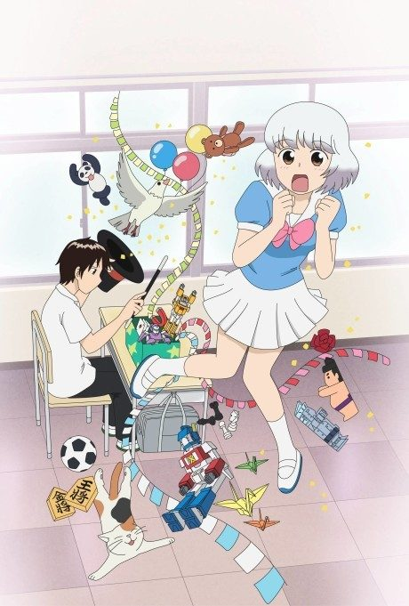
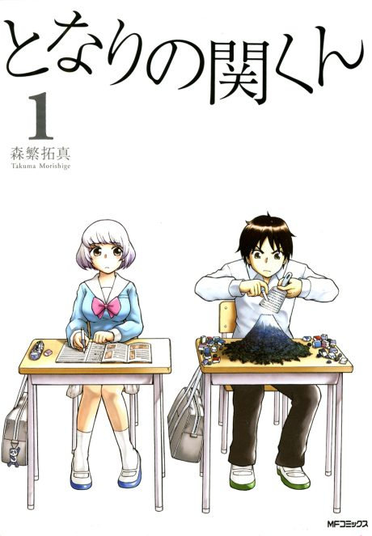

Tonari no Seki-kun: The Master of Killing Time
となりの関くん
After the anime, read the manga from Chapter 51.
7.3AniList score
—Animeter, no votes yet
21episodes
Is it worth pushing through?
Built from what visitors report across all 21 episodes.
Loading reports…Checking what other people said about this one.
Sign in above with your email to add your report.